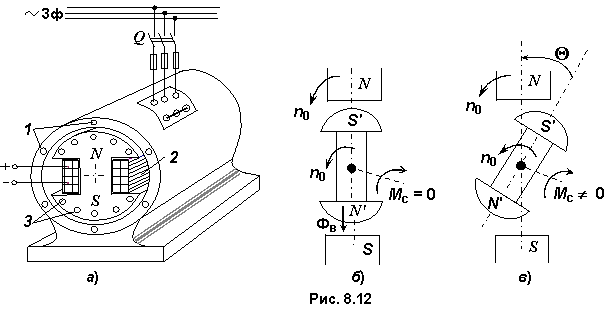

8.5.1. Принцип работы синхронного двигателя
При включении обмоток 1 якоря (рис. 8.12a) в трехфазную сеть токи статорной обмотки, смещенные по фазе на угол 2π / 3, создают вращающееся с частотой n1 = 60f1/p магнитное поле Фя. Однако ротор с магнитным потоком Фв, созданным постоянным током Iв обмотки возбуждения 2, будет неподвижным, так как быстровращающееся магнитное поле Фя действует на ротор со знакопеременной силой, не создающей среднего момента, т.е. пусковой момент синхронного двигателя Мп = 0.

Но если предварительно разогнать ротор до частоты вращения n2, близкой к синхронной n1, то возникающий электромагнитный момент, как результат взаимодействия (притяжения) разноименных полюсов магнитных полей якоря и ротора, (см. рис. 8.12б) заставит следовать ротор за магнитным полем статора, как говорят, втянуться в синхронизм.
Для разгона современных синхронных двигателей (СД) в их ротор встраивают пусковую короткозамкнутую обмотку 3 (см. рис. 8.12а), подобную беличьей клетке асинхронных двигателей. Стержни этой обмотки укладывают в специальные пазы полюсов и соединяют по торцам ротора.


Для разгона современных синхронных двигателей (СД) в их ротор встраивают пусковую короткозамкнутую обмотку 3 (см. рис. 8.12а), подобную беличьей клетке асинхронных двигателей. Стержни этой обмотки укладывают в специальные пазы полюсов и соединяют по торцам ротора.